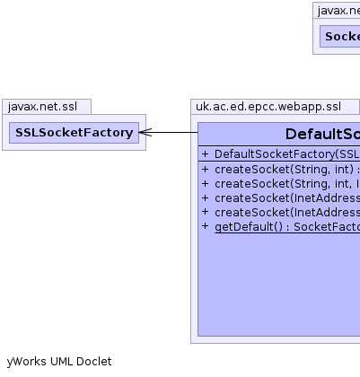
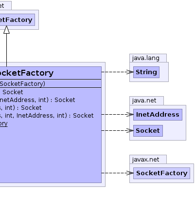

public class DefaultSocketFactory
extends javax.net.SocketFactory
SSLContext cached in the SSLService
The SSLService.makeDefaultContext() method needs to have been called first to populate the cache.SSLService|  |  |
| Constructor and Description |
|---|
DefaultSocketFactory(javax.net.ssl.SSLSocketFactory fac) |
| Modifier and Type | Method and Description |
|---|---|
java.net.Socket |
createSocket(java.net.InetAddress arg0,
int arg1) |
java.net.Socket |
createSocket(java.net.InetAddress arg0,
int arg1,
java.net.InetAddress arg2,
int arg3) |
java.net.Socket |
createSocket(java.lang.String arg0,
int arg1) |
java.net.Socket |
createSocket(java.lang.String arg0,
int arg1,
java.net.InetAddress arg2,
int arg3) |
static javax.net.SocketFactory |
getDefault() |
public DefaultSocketFactory(javax.net.ssl.SSLSocketFactory fac)
public static javax.net.SocketFactory getDefault()
public java.net.Socket createSocket(java.lang.String arg0,
int arg1)
throws java.io.IOException,
java.net.UnknownHostException
createSocket in class javax.net.SocketFactoryjava.io.IOExceptionjava.net.UnknownHostExceptionpublic java.net.Socket createSocket(java.net.InetAddress arg0,
int arg1)
throws java.io.IOException
createSocket in class javax.net.SocketFactoryjava.io.IOExceptionpublic java.net.Socket createSocket(java.lang.String arg0,
int arg1,
java.net.InetAddress arg2,
int arg3)
throws java.io.IOException,
java.net.UnknownHostException
createSocket in class javax.net.SocketFactoryjava.io.IOExceptionjava.net.UnknownHostExceptionpublic java.net.Socket createSocket(java.net.InetAddress arg0,
int arg1,
java.net.InetAddress arg2,
int arg3)
throws java.io.IOException
createSocket in class javax.net.SocketFactoryjava.io.IOException